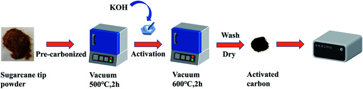
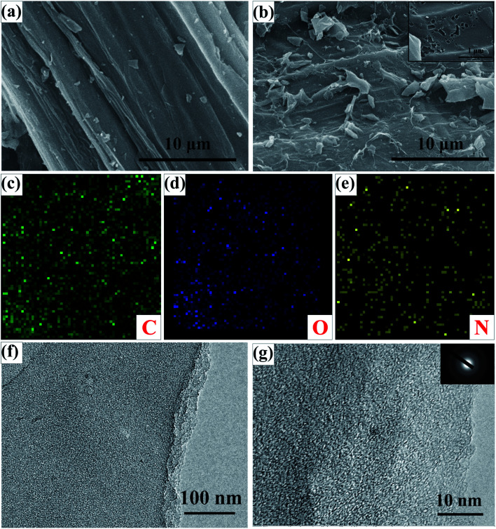
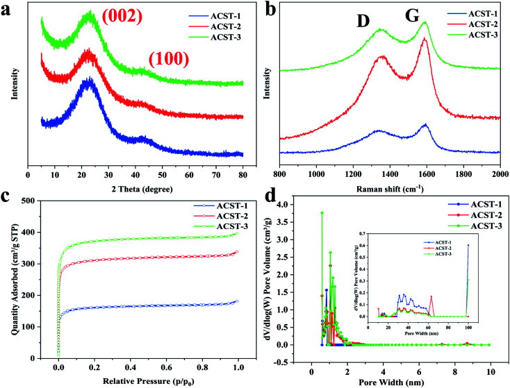
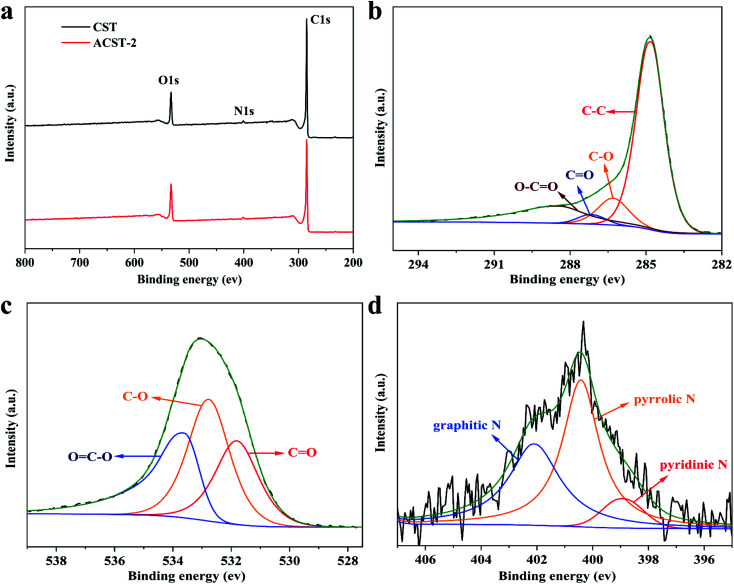
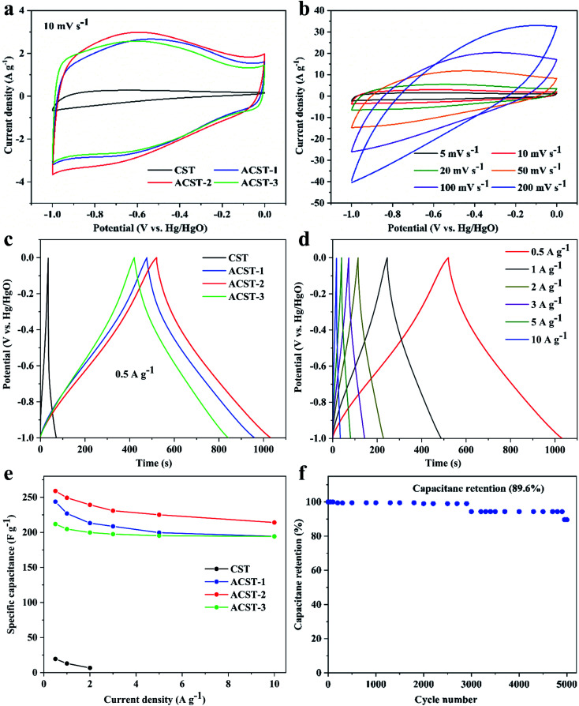
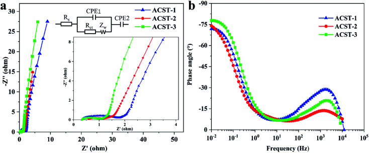
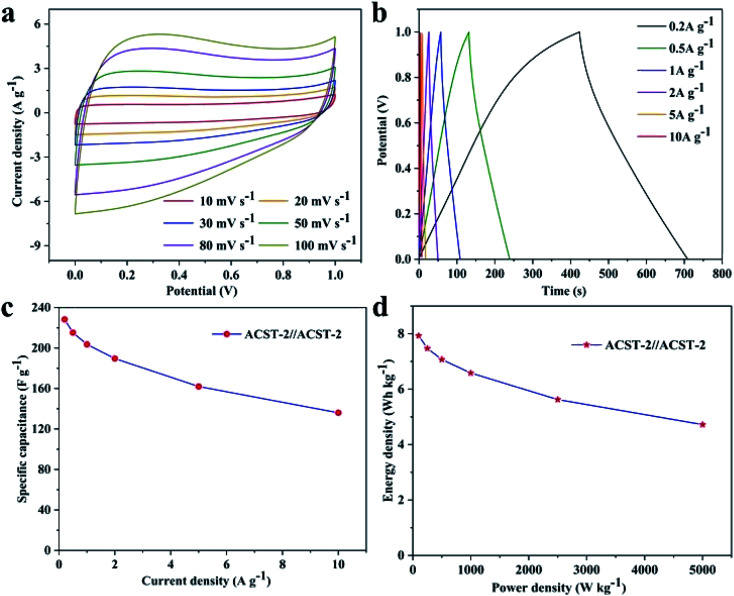

Promising activated carbon derived from sugarcane tip as electrode material for high-performance supercapacitors†
本地阅读版：出版社提交的完整 XML 正文与原图。排版由本项目生成；原始 XML 为证据。不是出版社 PDF。
DOI: 10.1039/d1ra04143f
Abstract
We present a simple, low-cost method for producing activated-carbon materials from sugarcane tips (ST) via two-step pre-carbonization and KOH activation treatment. After optimizing the amount of KOH, the resulting ST-derived activated carbon prepared with a KOH to PC-ST mass ratio of 2 (ACST-2) contained 17.04 wt% oxygen and had a large surface area of 1206.85 m2 g−1, which could be attributed to the large number of micropores in ACST-2. In a three-electrode system, the ACST-2 electrode exhibited a high specific capacitance of 259 F g−1 at 0.5 A g−1 and good rate capability with 82.66% retention from 0.5 to 10 A g−1. In addition, it displayed a high capacitance retention of 89.6% after 5000 cycles at a current density of 3 A g−1, demonstrating excellent cycling stability. Furthermore, the ACST-2//ACST-2 symmetric supercapacitor could realize a high specific energy density of 7.93 W h kg−1 at a specific power density of 100 W kg−1 in 6 M KOH electrolyte. These results demonstrate that sugarcane tips, which are inexpensive and easily accessible agricultural waste, can be used to create a novel biomass precursor for the production of low-cost activated carbon materials for high-performance supercapacitors.
Abstract
The aim of this study is to produce activated-carbon materials from sugarcane tips (ST) via two-step pre-carbonization and evaluate the electrochemical performance.
Introduction
P0001
The demand for green and efficient energy storage technologies has become increasingly urgent because of the depletion of traditional energy sources and the serious environmental issues associated with their use.1,2 Supercapacitors (SCs), as advanced energy storage devices, have attracted increasing attention for many applications, such as portable electronics, hybrid electric vehicles, and biomedical devices owing to their high-power density, fast charge and discharge processes, long cycle life, convenient fabrication, and wide operating temperature.3–6 Activated carbon materials (ACs) are widely utilized in SCs because they have excellent conductivity, low cost, and chemical stability. ACs with biological waste as the precursors are widely used in double-layer supercapacitors (EDLCs) because of their advantages that include a large specific surface area and being renewable and abundant.7 To date, ACs derived from biological waste show good electrochemical performance, including materials derived from waste tea-leaves,8 pomelo peel,9 lotus seedpods,10 mangosteen peel,11 cotton fabric,12 and cotton straw.13
P0002
In principle, the charge storage of EDLCs can be attributed to electrostatic charge accumulated at the electrode/electrolyte interfaces; therefore, it is highly dependent on the effective surface area of the electrode materials that is accessible to the electrolyte ions.14 In general, the electrode materials of supercapacitors are usually processed via an activation process to increase the specific surface area, which can lead to enhanced electrochemical performance. However, previous studies have found that the electrochemical performance and specific surface area are not linearly related. To obtain high electrochemical performance, it is necessary not only to increase the specific surface area but also have a suitable pore structure.15 Normally, chemical activation is a clear pathway to prepare activated carbon. To achieve the above conditions, chemical activating agents such as KOH, NaOH, K2CO3, and H3PO4 have been used to prepare ACs by changing the activation conditions. Among these reagents, KOH is the most effective and commonly used activator for chemical activation.7
P0003
The sugarcane tip is formed by the top 2–3 shoots of the sugarcane, accounting for ∼10% of the sugarcane biomass, and is the main lignocellulosic waste after agricultural sugarcane harvest. Although bagasse, a waste product of sugarcane, has been widely used for the preparation of carbon materials, the application of sugarcane tips in this field has not been widely investigated. Because sugarcane tips are cheap, plentiful, and contain 43% cellulose, 27% hemicellulose, and 17% lignin,16 they also serve as an effective activated-carbon precursor. Every year, 7 million tons of sugarcane tip waste is generated in Guangxi, China, of which, only a small portion is used for seed retention and feed, and the majority is left in the field to be burned, causing not only pollution and safety risks but is also a waste of resources. Therefore, the use of sugarcane tips to prepare activated-carbon materials can be one effective way to address these issues.
P0004
In this work, we demonstrate a facile strategy to synthesize activated carbon materials with a high specific surface area via a two-step method using ST as the biomass precursor. The effect of the activator (KOH) content on the morphology, crystallinity, and porosity of the produced activated carbon along with their electrochemical performance was investigated. ACST-2 had a high surface area of 1206.85 m2 g−1, a synergism of porosity and graphitization degree. Benefiting from its unique properties, ACST-2 presented a high specific capacitance of 259 F g−1 at 0.5 A g−1 in a three-electrode system with 6 M KOH electrolyte. Furthermore, the ACST-2//ACST-2 symmetric supercapacitor device showed excellent energy storage performance with a high specific energy density of 7.93 W h kg−1 at a specific power density of 100 W kg−1. Hence, this simple synthesis method has significant application prospects to prepare sugarcane-tip-derived activated carbon for use as supercapacitor electrode materials.
Experimental
Materials
P0005
The sugarcane tip used in this work was from Guangxi University. All chemicals in this study were of analytical reagent grade and used without further purification.
Preparation of sugarcane-tip-derived activated carbon
P0006
The sugarcane tip was washed with distilled water and dried at 105 °C overnight and subsequently crushed into small particles to obtain a fine powder. Sugarcane tip powder was first carbonized at 500 °C for 2 h under vacuum with a heating rate of 5 °C min−1. The pre-carbonized powders are denoted as PC-ST (pre-carbonized sugarcane tip). Then, the PC-ST sample was mixed with KOH with a weight ratio of 1 : 1, 1 : 2, and 1 : 3. Thereafter, the resultant mixtures were calcined at 600 °C for 2 h under vacuum at a heating rate of 5 °C min−1 in a vacuum muffle furnace. After cooling down to room temperature, the as-obtained products were washed with HCl solution (2 M) and deionized water several times until they obtained a pH of 7. They were then dried in an oven at 100 °C overnight. The final prepared activated carbon materials were named ACST-x, where x represents the mass ratio of KOH to PC-ST (1, 2, and 3). For comparison, carbonized sugarcane tip (CST) without any activation was obtained by direct carbonization at 600 °C for 2 h under vacuum conditions.
Materials characterization
P0007
The morphology characteristics and microstructure of the materials were determined by field emission scanning electron microscopy (FESEM, SU8020) and transmission electron microscopy (TEM, JEOL JEM 2100). The crystalline attributes of the as-obtained products were determined by X-ray diffraction (XRD, Rigaku D/Max 2500 diffractometer) using Cu Kα radiation (40 kV, 100 mA, λ = 1.5406 Å) in a scanning angle range of 5°–80° at a scanning rate of 5° min−1. Raman spectroscopy of the as-obtained products were recorded with a laser Raman spectroscope (inVia Reflex, 523 nm laser wavelength). Nitrogen adsorption and desorption isotherms were obtained at −196 °C with an adsorption setup (Micromeritics ASAP 2020 2.02). The specific surface area was determined via the Brunauer–Emmett–Teller (BET) method and the pore size distribution was calculated using a nonlocalized density functional theory (NLDFT) model. The surface elemental composition and chemical states were obtained by an X-ray photoelectron spectrometer (XPS, Thermo Fisher Scientific) with a monochromatic Al Kα X-ray source (1486.6 eV).
Electrochemical measurements
P0008
All the electrochemical characterization measurements including cyclic voltammetry (CV), galvanostatic charge–discharge (GCD), and electrochemical impedance spectroscopy (EIS) were carried out using a CHI 660E electrochemical workstation (Shanghai Chenhua, China) in aqueous 6 M KOH electrolyte. To prepare the working electrode, the ACST-x, acetylene black, and polytetrafluoroethylene (PTFE) were mixed at a mass ratio of 80 : 10 : 10 using N-methyl-2-pyrrolidone (NMP) as the solvent. The obtained slurry was coated on a piece of nickel foam (1.0 × 1.0 cm2) and then dried at 80 °C under vacuum for 12 h. An Hg/HgO reference electrode and Pt wire counter electrode were used in the three-electrode systems. CV and GCD measurements were carried out in the potential range of −1 to 0 V. EIS measurements were performed within the frequency range of 100 000 Hz to 0.01 Hz with an amplitude of 5 mV. Symmetrical supercapacitors were assembled from the same activated carbon material as the positive and negative electrodes. For the two-electrode system, the specific capacitance from the GCD curve was calculated from the following equation:1where Cm is the specific capacitance (F g−1), m is the weight of the active substance, Δv is the discharge potential window (V), I is the discharging current (A), and Δt is the discharge time (s).
P0009
The specific capacitance from GCD was calculated with the symmetrical-electrode method calculated using equation:2where C is the specific capacitance, I, Δt and Δv are the discharging current, the discharge time, and the discharge potential window, respectively, and m is the total mass of electrode materials.
P0010
The specific energy density (E, W h kg−1) and specific power density (P, W kg−1) of the symmetrical supercapacitor were calculated from the following equations:34
Results and discussion
P0011
A schematic for the preparation process to obtain the ACST is given in Scheme 1. The pre-carbonization temperature was determined by TGA, as shown in Fig. S1.† The sugarcane tip powder was subjected to a pre-carbonization process at 500 °C for 2 h in vacuum condition to yield PC-ST. To determine the optimal capacitor electrode material, the effect of the activation temperature on the performance of the supercapacitor was investigated, and the results are shown in Fig. S2 and S3.† To further refine the pore properties and specific surface area, PC-ST was activated with KOH (1 : 1, 1 : 2, and 1 : 3 mass ratio) at the optimized temperature of 600 °C for 2 h. Then, the obtained products were washed and dried. Significantly, the specific area and porous nature of the products were remarkably affected by the activator ratio.
P0012
Schematic illustration of synthesis procedure to obtain activated carbon derived from sugarcane tip (ACST).
Structural, morphological, and elemental analysis
P0013
The surface microscopic properties of the obtained products were characterized by FESEM and TEM. SEM images of CST and ACST-2 with low magnification are shown in Fig. S4.† The microstructure of CST is shown in Fig. 1a. The sample exhibits a relatively smooth surface with some small debris, however, no obvious pores appear on the surface. The microscopic structure of ACST-2 is shown in Fig. 1b, which clearly shows that etching the substance with KOH results in an extremely rough surface. Moreover, the surface is wrinkled and larger fragments are produced because of the added activator. The crumpled structure and rough surface of ACST-2 can effectively improve the open surface area, provide more active sites for storage of a large amount of charge, and increase electron transportability to facilitate the formation of the double electric layer.17 Simultaneously, high-magnification images demonstrated that a significant number of pores could be observed on the surface of the ACST-2, as shown in the inset of Fig. 1b, confirming that carbon reacting with KOH effectively creates plentiful pores on the surface of the carbon materials. These pores embedded in the material are important for electron diffusion, and therefore, improving the electrochemical properties of materials. Furthermore, the EDS-mapping image of ACST-2, which is shown in Fig. 1c–e, further confirms the uniform distribution of C, O, and N atoms throughout the carbon framework.
P0014
FESEM images of (a) CST; (b) ACST-2 (the inset is the high magnification image); (c–e) the elemental mapping of ACST-2 of C; O; N; (f and g) TEM images of ACST-2. The inset in (g) shows the corresponding SAED pattern.
P0015
The microstructure of ACST-2 was further characterized via TEM. Fig. 1f shows the presence of plate-like structure with relatively rough edges and abundant pores in ACST-2, which is consistent with the SEM results. Fig. 1g exhibits a high-resolution TEM image, from which a large number of micropores can be clearly observed, demonstrating that the material mainly consists of amorphous carbon. Furthermore, an unclear diffraction ring in the SAED diagram (inset in Fig. 1g) indicates that the sample has a low degree of crystallinity.18
P0016
Fig. 2a shows the XRD spectrums of the as-obtained ACST-1, ACST-2, and ACST-3. All products display two broad diffraction peaks at approximately 23° and 43° that correspond to the (002) and (100) planes of graphite,11,19 respectively, suggesting the presence of amorphous carbon;20,21 these results are in good agreement with the TEM and SAED results. Furthermore, it is noteworthy that clear intensity associated with ACST-2 and ACST-3 could be observed at a low-angle scattering peak. The shift of the intensity from high to low at a low angle can be explained by the presence of a certain amount of micropores in the sample.22,23 The results for the degree of graphitization of the as-prepared carbon materials were further confirmed by Raman spectroscopy, as shown in Fig. 2b. The two dominant peaks at 1345 and 1590 cm−1 correspond to the D-band and G-band of carbon materials, respectively. The D-band is associated with defects in the carbon material, while the G-band can be attributed to the vibration of sp2 carbon in the graphite crystallites.24 Generally, the intensity ratio of the D-band and G-band (ID/IG) is used to reflect the graphitic degree of the samples, and a higher value of ID/IG indicates the presence of more defects in the carbon materials.12,25 Here, the measured ID/IG ratios of ACST-1, ACST-2, and ACST-3 were 0.84, 0.87, and 0.88, respectively. It can be observed that as the amount of KOH increased, the ID/IG ratio gradually increased, demonstrating increased disordered portions and defects in ACST-x. The presence of defects is beneficial for promoting the specific surface area and charge transport.26 However, the electrical conductivity of the materials may decline with the existence of the defects.27 Therefore, determining a suitable ID/IG ratio is beneficial for enhancing electrochemical performance.
P0017
(a) XRD pattens; (b) Raman spectra; (c) N2 adsorption–desorption isotherms, and (d) the pore size distribution curves of the ACST-1, ACST-2, and ACST-3.
P0018
To further study the porous texture, the as-obtained carbon materials were investigated via N2 adsorption–desorption measurements. As shown in Fig. 2c, all the samples revealed typical type I isotherms, and a sharp increasing adsorption isotherm could be observed at low relative pressures <0.1. This increase indicated that the ACST-x contained a large number of micropores because the adsorption and desorption curves almost coincided with each other.28,29Fig. 2d shows the corresponding pore size distribution curves of ACST-x based on the NLDFT method with the desorption curve. It can be seen that all the samples had micropores primarily less than 2 nm, which is suitable for charge accumulation, and thus, increases the electric double-layer capacitance. Details of the porous texture of the ACST-x samples are summarized in Table 1. It can be noted that the specific surface area and total pore volume increased rapidly as the activator content increased. The specific surface area of ACST-1, ACST-2, and ACST-3 were determined to be 496.48, 1206.85, and 1438.01 m2 g−1 and the total pore volumes were 0.28, 0.52, and 0.61 cm3 g−1, respectively. Intriguingly, this trend was similar to that of the ID/IG ratio with increasing amounts of KOH. These results indicate increased defect generation due to the reaction between KOH and the carbon skeleton, which facilitates utilization of the porosity and increases the surface area by generating a large number of micropores and enlarging the pore size.
P0019
BET textural characteristics of the samples
P0020
Sample S BET a (m2 g−1) S mic b (m2 g−1) V total c (cm3 g−1) V mic b (cm3 g−1) D aver d (nm)ACST-1496.48403.740.280.214.42ACST-21206.851062.260.520.423.83ACST-31438.011266.560.610.503.50
P0021
Total surface area calculated by the BET method.
P0022
The specific surface area and volume of micropore measured by the t-plot method.
P0023
Total pore volume calculated at P/P0 = 0.99.
P0024
Average pore diameter determined by BJH desorption.
P0025
Fig. 3 displays the chemical components and functional groups of CST and ACST-2 analyzed via XPS. Three peaks with binding energies of 285.2, 401.1, and 533.0 eV can be observed from the survey of CST and ACST-2, as shown in Fig. 3a, which can be assigned to the C 1s, N 1s, and O 1s peaks, respectively. The C : O : N content was determined to be 84.35 wt% : 13.73 wt% : 1.91 wt% and 81.28 wt% : 17.04 wt% : 1.68 wt% for the CST and ACST-2 samples, respectively. Fig. 3b exhibits the high-resolution spectrum of C 1s, which could be deconvoluted into four individual peaks at 284.8, 286.3, 287.2, and 288.4 eV that could be attributed to C–C, C–O, C <svg xmlns="http://www.w3.org/2000/svg" version="1.0" width="13.200000pt" height="16.000000pt" viewBox="0 0 13.200000 16.000000" preserveAspectRatio="xMidYMid meet"><metadata> Created by potrace 1.16, written by Peter Selinger 2001-2019 </metadata><g transform="translate(1.000000,15.000000) scale(0.017500,-0.017500)" fill="currentColor" stroke="none"><path d="M0 440 l0 -40 320 0 320 0 0 40 0 40 -320 0 -320 0 0 -40z M0 280 l0 -40 320 0 320 0 0 40 0 40 -320 0 -320 0 0 -40z"/></g></svg> O, and O–CO, respectively.30 The high-resolution spectrum of O 1s is given in Fig. 3c, and three peaks could be observed and attributed to CO, C–O, and OC–O bonds at the binding energies of 531.8, 532.7, and 533.6 eV, respectively.31,32 Previous literature reported that double and single bonded oxygen could enhance the hydrophilicity of carbon materials and markedly improve the total specific capacity by enhancing the faradaic pseudo-capacitance.33,34 In addition, the N 1s spectra (Fig. 3d) revealed three major peaks that could be attributed as pyridinic N (398.9 eV, N-6), pyrrolic N (400.4 eV, N-5), and graphitic N (402.1 eV, N-Q).35 It has been widely demonstrated that pyridinic N and pyrrolic N display excellent electrochemical capability in an alkaline solution and generate pseudo-capacitance.36,37 Graphitic N can be embedded in the carbon matrix and combined with carbon atoms, contributing to electron diffusion and improving the conductivity of the electrode.38
P0026
XPS (a) survey spectrum of CST and ACST-2; high-resolution spectrum of ACST-2 of (b) C 1s; (c) O 1s; and (d) N 1s.
Electrochemical performance
P0027
To check the electrochemical properties of CST, ACST-1, ACST-2, and ACST-3, CV was employed based on a three-electrode configuration in an aqueous electrolyte of 6 M KOH solution within a potential window ranging between −1 and 0 V vs. Hg/HgO at a scan rate of 10 mV s−1. The results show that 600 °C is the optimum activation temperature. Fig. 4a displays the CV curve of CST, which resembles a triangle; the region under the curve is small, which indicates weak charge storage performance and a relatively low capacitance value. The CV curve after activation of the sample clearly exhibits an approximate quasi-rectangular shape, demonstrating excellent capacitive behavior and a relatively small internal resistance. Compared with the other samples, the CV curve of ACST-2 shows the largest enclosed area, indicating the highest specific capacitance of ACST-2. Moreover, a wide peak could be observed in the voltage range of −0.8 to −0.3 V, which is due to pseudo-capacitance from the faradaic processes of the CO, N-5, and N-6 functional groups on the electrode surface.39Fig. 4b shows the CV curves for the ACST-2 electrode at various scan rates. The CV curves continue to have a nearly rectangular shape and display slight variations in the scan rate range of 5–100 mV s−1, demonstrating rapid charge transport capability and easy ion diffusion within its pore channel.40 Nevertheless, the curve was distorted as the scan rate increased to 200 mV s−1. This could be attributed to the ohmic resistance for electrolyte motion in the carbon pore channels, in which distributed charge storage has been reported for the double layer formation mechanism.8,41
P0028
(a) CV curves of CST and ACST-x at a scan rate of 10 mV s−1; (b) CV curves at various scan rates of ACST-2; (c) GCD profiles of CST and ACST-x at a current density of 0.5 A g−1; (d) GCD profiles of ACST-2 under various current densities; (e) specific capacitance at different current densities of CST, ACST-1, ACST-2, and ACST-3-derived electrodes; (f) cycling stability of ACST-2 at 3 A g−1.
P0029
Fig. 4c exhibits the GCD profiles of the ST-derived electrodes under a current density of 0.5 A g−1. The profiles display a quasi-triangle shape instead of a symmetric triangle, which indicates an associative feature of electrical double-layer capacitance and pseudocapacitive behaviors for the N and O active species.42 As illustrated in literature, N-5 and N-6 play a vital role in affording pseudo-capacitance and thus leading to curve distortion.43 Notably, the ACST-2 electrode displays the longest discharge time, while ACST-1 and ACST-3 show slightly reduced discharge times, and the CST electrode presents the shortest discharge time. This reveals that the ACST-2 electrode exhibits the largest specific capacitance (259 F g−1), followed by ACST-1 (243.8 F g−1), ACST-3 (211.9 F g−1), and CST (19.5 F g−1), which agreed well with the CV results at 10 mV s−1. Although the specific capacitance of ACST-2 is the largest, the surface area of the carbon materials did not follow the same sequence (ACST-3 > ACST-2 > ACST-1). This demonstrates that the capacitance is not only related to the specific surface area but also associated with other characteristics, such as pore size distribution or functional groups.44 Importantly, the surface area-normalized capacitance of ACST-2 was 0.21 F m−2, which is higher than ACST-1 (0.15 F m−2), exhibiting a higher surface area utilization rate for ACST-2 than ACST-3. The superior specific capacitance for the ACST-2 can be attributed to the relatively high effective surface area with abundant exposed ion absorption sites for charge accumulation in electric double-layer.45
P0030
The GCD profiles of the ACST-2 electrode displayed an approximately triangular shape at various current densities, as shown in Fig. 4d. Additionally, the GCD profile could still be maintained as a triangle under a high current density of 10 A g−1, demonstrating desirable capacitive behavior. In addition, only a slight IR drop (200 mV) was detected at this high current density, indicating a high charge–discharge efficiency and low equivalent series resistance,10,46 which can explain the distortion of the CV curves.
P0031
The specific capacitances of all the samples gradually decreased with increasing current densities from 0.5 to 10 A g−1, as shown in Fig. 4e. This decrease could be attributed to the slow migration of ions between the electrolyte and surface of electrode at low current density. All hydrated ions could entirely diffuse within the pore, enhancing the ion storage capacity and thus increasing the specific capacitance. However, at high current densities, the electrolyte ions do not have sufficient time to access the microporous surface, and thus, the specific capacitance at high current densities is lower than that at low current densities.40 In addition, at a current density of 10 A g−1, the capacitance of ACST-1, ACST-2, and ACST-3 remains at 79.70% (194.3 F g−1), 82.66% (214.1 F g−1), and 91.65% (194.2 F g−1) of the initial capacitance at 0.5 A g−1. These results demonstrate that ACST-2 is a promising carbon electrode material for supercapacitors. The cycling stability imply that the number of times the electrolyte ions could migrate into the available pores for the repeated number of cycles. Fig. 4f shows the long cycling stability of the ACST-2 electrode as demonstrated via GCD measurement at 3 A g−1 for 5000 cycles. After cycling, the capacitance value decreased, which may be due to the increase of internal resistance. The ACST-2 electrode still retained 89.6% of the initial capacitance after 5000 cycles, demonstrating excellent cycling stability and high reversibility.
P0032
The electrochemical impedance spectroscopy (EIS) of ACST-1, ACST-2, and ACST-3 were further studied from 0.01 to 100 000 Hz in a 6 M KOH solution. Fig. 5a shows the Nyquist plots of the ACST-1, ACST-2, and ACST-3 electrodes and an equivalent electric circuit to fit the Nyquist plot. All samples were divided into three different sections: a semicircle, a straight line of 45°, and a vertical line in the high, medium, and low frequencies. As shown in the inset of Fig. 5a, the intercept of the semicircle at the real axis (Z′) indicates the equivalent series resistance (Rs), which contains the intrinsic electroactive material resistance, ionic transport resistance of the electrolyte, and the contact resistance at the interface of the electrode materials and current collectors.47 The Rs value of ACST-1, ACST-2, and ACST-3 were 0.32, 0.53, and 0.33 Ω, respectively, indicating negligible contact resistance and good conductivity.48 The diameter of the semicircle is related to the interfacial charge transfer resistance (Rct). The Rct values for ACST-1, ACST-2, and ACST-3 were 1.24, 0.54, and 0.62 Ω, respectively, which demonstrated minimal charge transfer resistance for the ACST-2 electrode. In addition, the short line with the 45° slope is called the Warburg resistance, which is associated with ion diffusion/transport into the active materials.49 At low frequencies, the straight line is nearly vertical—close to 90°—suggesting better capacitive behavior and rapid ion diffusion in the carbon electrode structure.50Fig. 5b displays the Bode phase plots of ACST-1, ACST-2, and ACST-3, where the phase angle shifts to negative values of −71.77°, −74.04° and −77.80°, respectively, at a low frequency of 0.01 Hz. This indicates that the results are relatively close to that of an ideal supercapacitor (−90°), which suggests a primarily double-layer charge storage contribution with some pseudo-capacitive contribution for the material.51
P0033
(a) Nyquist plots and (b) Bode plots of the ACST-1, ACST-2, and ACST-3 electrodes.
P0034
To study the practical application of the ACST-2 sample, the ACST-2//ACST-2 symmetric supercapacitor was assembled in 6.0 M KOH electrolyte with an operating voltage range of 0–1 V. Fig. 6a exhibits the CV curves of the symmetric capacitor, the electrode exhibits a rectangular shape at a scanning rate of 10 mV s−1, indicating a typical double-layer capacitor behavior at the electrode and electrolyte interface. In addition, the CV curve remains approximately rectangular at a high scan rate of 100 mV s−1, indicating an ideal electrochemical capacitance behavior and excellent rate performance. The GCD curves were tested at different current densities (0.2 to 10 A g−1) and are shown in Fig. 6b. All the curves exhibited an approximately symmetric linear behavior, demonstrating the existence of bilayer behavior with favorable reversibility. From the GCD curves, specific capacitances of 228.3, 215.2, 203.6, 189.6, 162, and 136 F g−1 were obtained at 0.2, 0.5,1, 2, 5, and 10 A g−1, respectively. Fig. 6c shows the relationship between the specific capacitance and the current density, a specific capacitance of 59.6% was still retained even though the current density increased 50 times, indicating good rate performance for the ACST-2 supercapacitor. Fig. 6d shows the Ragone plot of the ACST-2//ACST-2 symmetric supercapacitor. The specific energy density of the symmetry supercapacitor was measured at 7.93 W h kg−1 for a specific power density of 100 W kg−1. For practical applications, it is important to measure the leakage current and self-discharge of the device, the results of our studies in this direction are shown in Fig. S5.† These results demonstrated that ACST-2 is a promising electrode material for supercapacitor applications.
P0035
Electrochemical performance of ACST-2 in a two-electrode system using 6.0 M KOH electrolyte: (a) CV curves at scanning rates from 10 to 100 mV s−1; (b) GCD curves at 0.2 to 10 A g−1; (c) specific capacitance at different current densities for ACST-2; (d) Ragone plot of ACST-2 in a symmetrical supercapacitor.
Conclusions
P0036
A novel sugarcane-tip-derived activated-carbon material was successfully prepared via a two-step method of pre-carbonization and KOH activation. The optimized activated carbon (ACST-2) displayed a large number of micropores, a high specific surface area of 1206.85 m2 g−1, and a high oxygen content of 17.04 wt%. The ACST-2, as an electrode material, exhibited a high specific capacitance of 259 F g−1 at a current density of 0.5 A g−1 in a three-electrode system. Moreover, the material displayed good rate capability with 82.66% retention from 0.5 to 10 A g−1 and excellent cycling stability with 89.6% capacitance retention after 5000 cycles at current density of 3 A g−1. Furthermore, the symmetric ACST-2//ACST-2 device exhibited excellent electrochemical properties in KOH electrolyte with a wide operating voltage range of 0–1 V. These outstanding electrochemical results confirm that sugarcane tip-derived activated carbon is a promising electrode material for energy-storage device application.
Author contributions
P0037
Bo Wei: date curation, methodology, and writing the original draft. Tiantian Wei: investigation. Caifeng Xie: conceptualization, review and editing. Kai Li: grammar check & data curation. Fangxue Hang: review, editing, and funding acquisition.
Conflicts of interest
P0038
There are no conflicts to declare.
Supplementary Material
原文图表（含文末 floats-group）

Scheme 1Schematic illustration of synthesis procedure to obtain activated carbon derived from sugarcane tip (ACST).

Fig. 1FESEM images of (a) CST; (b) ACST-2 (the inset is the high magnification image); (c–e) the elemental mapping of ACST-2 of C; O; N; (f and g) TEM images of ACST-2. The inset in (g) shows the corresponding SAED pattern.

Fig. 2(a) XRD pattens; (b) Raman spectra; (c) N2 adsorption–desorption isotherms, and (d) the pore size distribution curves of the ACST-1, ACST-2, and ACST-3.

Fig. 3XPS (a) survey spectrum of CST and ACST-2; high-resolution spectrum of ACST-2 of (b) C 1s; (c) O 1s; and (d) N 1s.

Fig. 4(a) CV curves of CST and ACST-x at a scan rate of 10 mV s−1; (b) CV curves at various scan rates of ACST-2; (c) GCD profiles of CST and ACST-x at a current density of 0.5 A g−1; (d) GCD profiles of ACST-2 under various current densities; (e) specific capacitance at different current densities of CST, ACST-1, ACST-2, and ACST-3-derived electrodes; (f) cycling stability of ACST-2 at 3 A g−1.

Fig. 5(a) Nyquist plots and (b) Bode plots of the ACST-1, ACST-2, and ACST-3 electrodes.

Fig. 6Electrochemical performance of ACST-2 in a two-electrode system using 6.0 M KOH electrolyte: (a) CV curves at scanning rates from 10 to 100 mV s−1; (b) GCD curves at 0.2 to 10 A g−1; (c) specific capacitance at different current densities for ACST-2; (d) Ragone plot of ACST-2 in a symmetrical supercapacitor.
BET textural characteristics of the samples
Sample
S BET a (m2 g−1)
S mic b (m2 g−1)
V total c (cm3 g−1)
V mic b (cm3 g−1)
D aver d (nm)
ACST-1
496.48
403.74
0.28
0.21
4.42
ACST-2
1206.85
1062.26
0.52
0.42
3.83
ACST-3
1438.01
1266.56
0.61
0.50
3.50
References
References BayatsarmadiB. ZhengY. VasileffA. QiaoS. Z. Small201713170019110.1002/smll.20170019128402595 NaiJ. LouX. W. D. Adv. Mater.201831170682510.1002/adma.20170682530155969 WuN. LowJ. LiuT. YuJ. CaoS. Appl. Surf. Sci.20174133510.1016/j.apsusc.2017.03.297 HoangV. C. GomesV. G. Mater. Today Energy20191219810.1016/j.mtener.2019.01.013 YangL. ShiM. JiangJ. LiuY. YanC. LiuH. GuoZ. Mater. Lett.20192442710.1016/j.matlet.2019.02.064 ParkS. K. LeeH. ChoiM. S. SuhD. H. NakhanivejP. ParkH. S. Energy Storage Mater.20181233110.1016/j.ensm.2017.10.008 LiY. PiY. LuL. XuS. RenT. J. Power Sources201529951910.1016/j.jpowsour.2015.09.039 PengC. YanX. WangR. LangJ. OuY. XueQ. Electrochim. Acta20138740110.1016/j.electacta.2012.09.082 LiangQ. YeL. HuangZ. XuQ. BaiY. KangF. YangQ. Nanoscale201461383110.1039/C4NR04541F25300494 LiuB. ZhouX. ChenH. LiuY. LiH. Electrochim. Acta20162085510.1016/j.electacta.2016.05.020 NasrullahA. SaadB. BhatA. H. KhanA. S. DanishM. IsaM. H. NaeemA. J. Clean. Prod.2019211119010.1016/j.jclepro.2018.11.094 SunC. GuoZ. ZhouM. LiX. CaiZ. GeF. J. Power Sources202148222893410.1016/j.jpowsour.2020.228934 TianX. MaH. LiZ. YanS. MaL. YuF. WangG. GuoX. MaY. WongC. J. Power Sources20173598810.1016/j.jpowsour.2017.05.054 ZhangL. L. ZhaoX. S. Chem. Soc. Rev.200938252010.1039/B813846J19690733 LiuY. WangX. JiangX. LiX. YuL. Nanoscale2018102284810.1039/C8NR06966B30488922 KhaireK. C. SharmaK. ThakurA. MoholkarV. S. GoyalA. J. Biosci. Bioeng.202113164765410.1016/j.jbiosc.2021.01.00933676868 QuS. WanJ. DaiC. JinT. MaF. J. Alloys Compd.201875110710.1016/j.jallcom.2018.04.123 SongM. ZhouY. RenX. WanJ. DuY. WuG. MaF. J. Colloid Interface Sci.201953527610.1016/j.jcis.2018.09.05530316114 LiuZ. TianD. ShenF. NnannaP. C. HuJ. ZengY. YangG. HeJ. DengS. J. Power Sources202045822805710.1016/j.jpowsour.2020.228057 ZouK. DengY. ChenJ. QianY. YangY. LiY. ChenG. J. Power Sources201837857910.1016/j.jpowsour.2017.12.081 ZhouY. RenJ. XiaL. ZhengQ. LiaoJ. LongE. XieF. XuC. LinD. Electrochim. Acta201828433610.1016/j.electacta.2018.07.134 QianW. SunF. XuY. QiuL. LiuC. WangS. YanF. Energy Environ. Sci.2014737910.1039/C3EE43111H ZhuY. MuraliS. StollerM. D. GaneshK. J. CaiW. FerreiraP. J. PirkleA. WallaceR. M. CychoszK. A. ThommesM. SuD. StachE. A. RuoffR. S. Science2011332153710.1126/science.120077021566159 RaniM. NanajiK. RaoT. N. DeshpandeA. S. J. Power Sources202047122838710.1016/j.jpowsour.2020.228387 LinG. MaR. ZhouY. LiuQ. DongX. WangJ. Electrochim. Acta20182614910.1016/j.electacta.2017.12.107 LinZ. XiangX. PengS. JiangX. HouL. J. Electroanal. Chem.201882356310.1016/j.jelechem.2018.06.031 ChiuY. LinL. J. Taiwan Inst. Chem. Eng.201910117710.1016/j.jtice.2019.04.050 TianY. WuJ. AIChE J.20186428610.1002/aic.15880 ZhangQ. HanK. LiS. LiM. LiJ. RenK. Nanoscale201810242710.1039/C7NR07158B29335695 KesavanT. PartheebanT. VivekananthaM. KunduM. MaduraiveeranG. SasidharanM. Microporous Mesoporous Mater.201927423610.1016/j.micromeso.2018.08.006 HeX. MaH. WangJ. XieY. XiaoN. QiuJ. J. Power Sources20173574110.1016/j.jpowsour.2017.04.108 LiuC. ShiG. WangG. MishraP. JiaS. JiangX. ZhangP. DongY. WangZ. RSC Adv.20199689810.1039/C8RA10193KPMC906103035518511 ZhaoY. RanW. HeJ. SongY. ZhangC. XiongD. GaoF. WuJ. XiaY. ACS Appl. Mater. Interfaces20157113210.1021/am506815f25531022 JiangL. YanJ. HaoL. XueR. SunG. YiB. Carbon20135614610.1016/j.carbon.2012.12.085 YaoQ. WangH. WangC. JinC. SunQ. ACS Appl. Mater. Interfaces201864695 ZhuB. LiuB. QuC. ZhangH. GuoW. LiangZ. ChenF. ZouR. J. Mater. Chem. A20186152310.1039/C7TA09608A HuangG. WangY. ZhangT. WuX. CaiJ. J. Taiwan Inst. Chem. Eng.20199667210.1016/j.jtice.2018.12.024 WuJ. ZhangD. WangY. HouB. J. Power Sources201322718510.1016/j.jpowsour.2012.11.074 LongC. MiaoL. ZhuD. DuanH. LvY. LiL. LiuM. GanL. ACS Appl. Energy Mater.20214572710.1021/acsaem.1c00566 GaoX. XingW. ZhouJ. WangG. ZhuoS. LiuZ. XueQ. YanZ. Electrochim. Acta201413345910.1016/j.electacta.2014.04.101 ShengZ. M. WangJ. N. YeJ. C. Microporous Mesoporous Mater.200811130710.1016/j.micromeso.2007.08.005 SongZ. MiaoL. LiL. ZhuD. GanL. LiuM. Carbon202118013510.1016/j.carbon.2021.04.078 ZouJ. LiuP. HuangL. ZhangQ. LanT. ZengS. ZengX. YuL. LiuS. WuH. TuW. YaoY. Electrochim. Acta201827159910.1016/j.electacta.2018.03.200 GaoY. ZhangW. YueQ. GaoB. SunY. KongJ. ZhaoP. J. Power Sources201427040310.1016/j.jpowsour.2014.07.115 PingG. MiaoL. AwatiA. QianX. ShiT. LvY. LiuY. GanL. LiuM. ZhuD. Chin. Chem. Lett.202110.1016/j.cclet.2021.04.055 SunK. YuS. HuZ. LiZ. LeiG. XiaoQ. DingY. Electrochim. Acta201723141710.1016/j.electacta.2017.02.078 TengY. LiuE. DingR. LiuK. LiuR. WangL. YangZ. JiangH. Electrochim. Acta201619439410.1016/j.electacta.2016.01.227 TangD. LuoY. LeiW. XiangQ. RenW. SongW. ChenK. SunJ. Appl. Surf. Sci.201846286287110.1016/j.apsusc.2018.08.153 MohammedA. A. ChenC. ZhuZ. J. Colloid Interface Sci.201953830810.1016/j.jcis.2018.11.10330530028 SongM. ZhouY. RenX. WanJ. DuY. WuG. MaF. J. Colloid Interface Sci.201953527610.1016/j.jcis.2018.09.05530316114 YangX. XuJ. ChenX. LeiY. WangL. ChengS. LiY. LuY. ZhuY. ChenN. Chin. J. Chem.20213935310.1002/cjoc.202000348